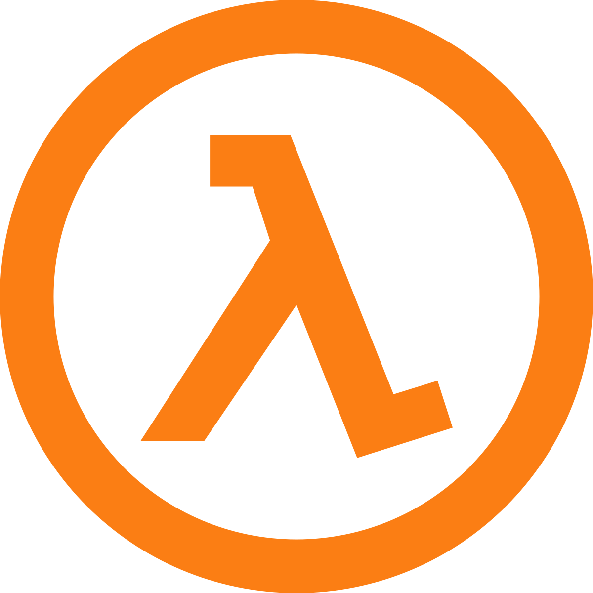

I have a very inquisitive and resilient mindset, if a problem or inconvenience appears in a project, I’ll do everything to solve it, if I don’t have the knowledge I'll try to acquired in the less amount of time possible.

Abilities
Adaptative person.
I always try to see every point of view.
Good working with a team or solo (in a team is prefered)
Good at communicating ideas.
Fast learner.
Proficient in:
Catalan (native)
Spanish (nativve)
English (level c1 demostrable)
Programming languages I know:
C++ high level
C# medium level
Java low level
HTML proficient
CSS proficient
JavaScript proficient
PHP high level
SQL proficient
Node Js low level
Git medium level
And some more... just ask :)
Work Experience
Warehouse staff at Lazaro Internacional(2014-2015)
Junior dev (Practices) at JanduSoft (2016, 2 months)
Web Developer at 4Tickets (2017-2020)
Education
ESO Graduate at INS Pineda de Mar (2008-2012)
Batxillerat Graduate at INS Joan Coromines (2012-2014)
Grau Superior DAM-Viod (Desemvolupament de aplicacions multiplataforma i Videojocs) at Escola Pia Balmes (2015-2017)
Grau Universitari in Software Enginieer at Universitat de Girona (EPS) (2020-Current)